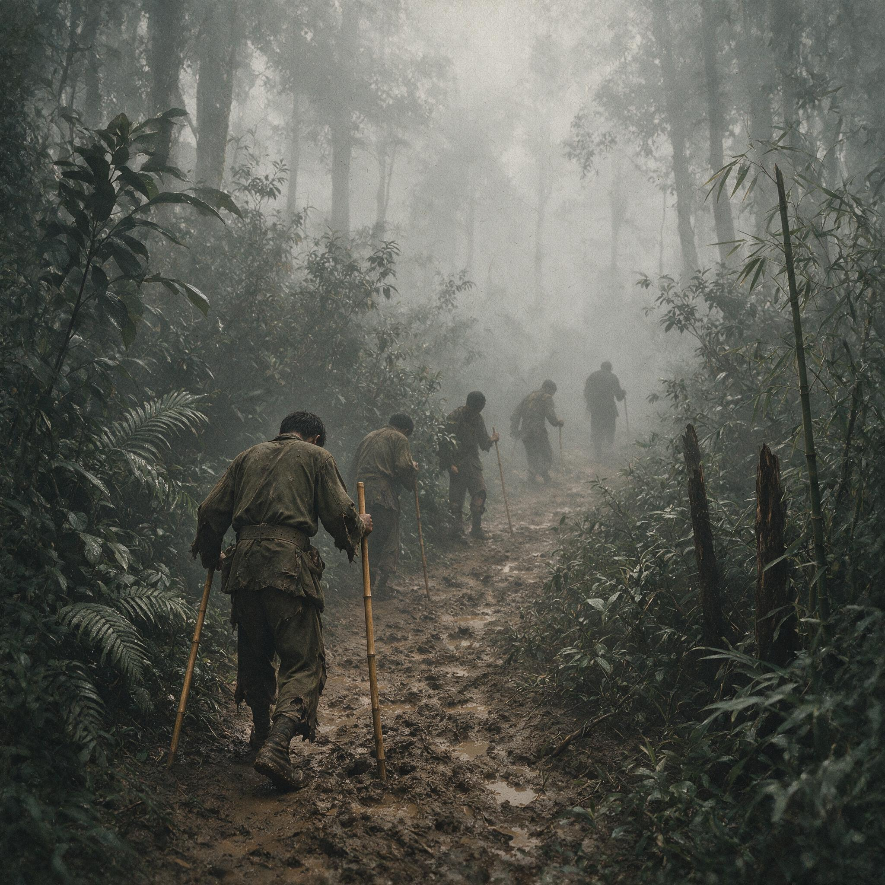

第 14 章
钢铁开始流入兰姆伽
砰的一声，木箱的盖子被撬开。撬箱子的人没有停手。他把铁撬插进另一条木板缝里，借着膝盖的力向下压，潮湿的木头发出一声脆响，断开了。
木箱里码着的铁皮罐头在雨季过后的旱热中泛着一层薄薄的油光，箱体上印着一行红字，依稀可以辨出几个字母和阿拉伯数字。他伸手进去，指尖碰到罐头表面的温度，比自己的体温更凉。

野人山撤退的绝望行军
AI 生成插图，非史实影像。
兰姆伽的热是干硬的。比哈尔邦的旱季把地面烤成一块灰白色的壳，风一吹，细土从铁轨旁扬起来，糊在汗湿的脖子上。从野人山方向过来的火车减速进站时，轮轴摩擦铁轨的声音尖而长，像什么东西在高温中断裂。
站台上没有彩旗。没有列队。只有几间敞着门的库房和远处一排排平顶的砖房，砖墙被晒得发白。几个美国兵站在月台北侧，手背在身后，看着车厢门从里面被拉开。
先探出来的不是脚。是一只手，瘦得关节凸起，抓住车门边沿。接着是另一只手，同样瘦得不像话，手指根部的皮肤在阳光下薄得发青。一个新二十二师的士兵从车厢里慢慢挪下来。
他穿着从野人山带出来的那身军装，已经看不出原来的颜色，裤腿撕成布条，露出的小腿上有几块边缘不整齐的旧伤。他站到地上时，身子晃了一下，但没有倒。没有人扶他。他的眼睛没有看向站台前的美国兵，也没有看那些开着的库房，他看的是那箱被撬开的罐头。
很多年以后，兰姆伽这个名字在当事人嘴里变得复杂起来。有人说那是他们第一次知道自己原来可以不被当作牲口一样对待。也有人说，那是一种从骨子里被重新计量、重新标价的过程。但在火车刚刚进站的那个时刻，还没有人想到这些。他们想到的只是水，是药，是一顿能够看见肉块的食物。
他们当中有些人已经在发烧，血里的疟原虫随着每一下心跳在血管里翻动；有些人从野人山下来后就没有排过一次成形的大便，痢疾把他们的肠子磨得像一块破布；还有些人夜里不敢睡，一闭眼就看见倒下的同伴在泥水里慢慢变硬。
但他们都活着。活着走到了这个有铁轨、有库房、有美国人站台的地方。兰姆伽原本是意大利战俘营。
1942年7月，新三十八师从因帕尔方向先期开到，八月，新二十二师和第五军直属部队的残部从野人山方向陆续抵达。这个时间差并不长，但已经足以让后来者看到一种对比。先到的新三十八师在缅甸没有走野人山。孙立人认为在雨季又是原始森林中蚊虫鼎盛的季节，部队进入原始森林，没有道路的话重装备和汽车均无法带走；没有补给将士们很难撑到走过野人山。
他决定不听取本就不是直接上司的杜聿明军长意见，按照远征军司令部长官史迪威和罗卓英的指示，就近撤往印度。第38师在撤退至印度过程中不仅没有受到损失，连装备也没有丢下，全部转移至印度。该部成为远征军撤退中唯一几乎没有损失的全建制部队。
而从野人山出来的人，几乎什么也没有了。他们失去了武器，失去了建制，失去了同伴，甚至失去了对身体的支配感。
两者在兰姆伽会合时，根据中美协议，远征军第一路司令长官部撤销，改称为中国驻印军总指挥部。史迪威为总指挥，罗卓英为副总指挥。同时，国民政府利用驼峰空运飞机回航的机会，每天空运几百名士兵到印度，以补充兵源。
这个名称的更替在当时没有引起太多讨论。对于刚从丛林里爬出来的士兵来说，司令部叫什么都不如一碗饭要紧。真正改变的，是从下车以后开始的。
第一道程序是收容。听起来简单，实际上一开始就显出不同的秩序。没有中国军队惯常的那种推搡和吼叫。士兵被引到库房前的空地上，排成几列，美国人手里拿着夹板，逐个登记。
一个问题接一个问题，通过翻译传下去：姓名，年龄，部队，还有病症。这是个极慢的过程。队伍里不断有人蹲下来，抱着肚子，或者突然把一口黄绿色的苦水吐在滚烫的地上。
没有人去打骂这些掉队的人。几个美国医疗兵提着医药箱来回走，看到站不住的人就往腋下塞一支体温计。体温计在太阳下面闪着玻璃的光。
接着是体检。体检表上的项目分得很细，不只写“病”或“无病”，而是要记下体重、体温、脉率、有无寄生虫、有无皮肤病、有无疥疮。很多士兵第一次知道自己的体重是这样被记录下来的——磅，不是斤。他们多数人不足一百磅。有的人身高还在，但身上的肉像是被野人山的雨冲走了，只剩下一副骨架子，胸腔的肋骨一根一根从皮肤下顶出来，像旧屋顶下面的椽子。医生的手指按上去，能清楚地摸到每一根骨头的边缘。
体检之后是洗澡。这不是一句话的洗澡。他们被分批送进淋浴间，脱掉所有衣服，用DDT粉喷洒全身，尤其是头发、腋下、腹股沟这些地方。白色的粉末扬起来，呛得人咳嗽。
然后热水从头顶浇下来，水流把依附在皮肤上的蜱、虱、螨连同几个月来的污垢一起冲进脚下的水槽。染过疥疮的人被另行处理，涂上药膏，发给干净的内衣。旧的军装没有洗，直接收走烧了。每人领到一套新军装，英式卡其布料子，新鞋，新帽，还有两条新绑腿。
士兵们从淋浴间出来的时候，彼此几乎认不出来。有人小声说，像换了一个人。也有人站在那里不动，低头看自己终于干净了的手掌，然后把手指慢慢收拢，再张开。
这个过程琐碎，但它背后的逻辑并不琐碎。它意味着，这支军队第一次把人当成了一个可以精确计量的单位。每具身体上的每一项指标都被记录下来，成为后续配给、治疗和安排的依据。这与国内“轻伤不下火线、重伤听天由命”的惯例完全不同。在兰姆伽，一根没有及时处理的手指伤口，都可能被记入档案。士兵的身体不再是天生用来消耗的，而是需要评估、修复、维持的资产。
这个变化最直接的体现是食物。到达兰姆伽的头几天，厨房里传出来的味道让很多人误以为自己到了什么地方。
有的士兵后来回忆说，闻到了真正的肉味。不是国内伙房那点漂在汤上的油星，而是整块整块在锅里翻动的牛肉。罐头被打开，铁皮边缘露出鲜红的肉汁。米饭盛在盘子里，旁边堆着肉、豆子、面包。这是他们几个月来第一次看见食物被如此不计成本地堆在一起。
有些人吃到一半就吃不下了。他们的胃在长期饥饿后缩得厉害，身体无法承受这样突然的富足。一些人吃完就吐了，吐出来的比吃进去的还多。医生并不惊讶。他们说，胃需要时间重新适应。于是饮食分成了几个阶段，从流质到半流质，再到正常口粮，每一阶段都要观察。
这不仅仅是让他们吃饱。兰姆伽的伙食标准是量化的。每人每日应当摄入多少热量，都有计算。牛肉罐头、猪肉罐头、蔬菜、面包、糖、盐、维生素片，按人按日分配。
维生素片是许多人第一次见。小小一粒，黄色的，放在舌头上带着苦味。防蚊药膏发下来，每个帐篷一瓶。奎宁片也是批量化供应，一日几次，由医务士监督服下。
对从野人山下来的人来说，奎宁的味道是熟悉的——它曾经是稀缺品，谁的手里握着一片奎宁，谁就捏着一线生机。现在它被当作例行的药片发下来，像发烟卷一样。这种转变的真实含义，不在于士兵们终于吃上了肉。肉本身说明不了什么问题。
真正的变化在于，士兵的体力成为制度安排的核心。每天的卡路里、维生素、药物、睡眠时间、排泄状况，都被纳入统一的管理。这是美式后勤哲学的前提：战斗力来自可以持续维护的身体，而非靠毅力支撑的意志。
史迪威要把中国的人力放到这套体系里去运转。他的战略逻辑并不复杂：美国的机器、英国统治下的印度基地、中国的士兵。三者结合，就能在北缅发起反攻。中国出人力，美国出装备和后勤。这笔账在纸面上是清楚的。
但纸面上一清二楚的账，落到地面上总会遇到别的东西。营级以上的中国指挥官很快就察觉到，所谓“中国驻印军”的指挥结构，并不只是把美国教官请进来，把参谋人员配进去那么简单。美械换装和美式参谋制度是同时进行的。
武器弹药、通讯器材、军需补给、训练计划，都要经过这套新的系统流动。美军联络官不仅教课，还掌握着每一份弹药申请单的流向。一个中国营长要申请四门迫击炮的实弹射击，需要经过联络官确认，需要美国人管理的仓库点头。武器进了中国部队手里，但补给线的开关在别人手中。这一点在当时并不容易看清。
白天训练时，操场上的场面是另一种感受。美国教官站在讲台上，举着步枪分解开来，一件一件说明。下面坐着一排排中国士兵，眼睛黑亮。他们中许多人在国内打过几年仗，熟悉中正式和汉阳造，也知道没有枪的个人在战场上意味着什么。现在他们面前摆着的是汤姆森冲锋枪、轻机枪、迫击炮、火箭筒。每一样都能拿到手里，拆开，装上，再拆开。
弹药供应之充足，让一些老兵一时不敢放手去打。他们在国内习惯了省着打，一发子弹都要算着用。美国教官看出他们的犹豫，大声示意继续。枪声在兰姆伽的靶场上成片响起，震得人耳朵嗡嗡响。孙立人和廖耀湘都先后到了兰姆伽。孙立人的新三十八师先期整训。
他在美国受过教育，对美军的训练方式不陌生。他跑得勤，经常出现在炮兵阵地和射击场上，看操作，问细节。廖耀湘的新二十二师从野人山出来，伤残和病员比重高，整训的起步慢一些。他抓的是部队的编组和恢复。每个连缺多少兵，能补多少，身体合格的多少，需要继续治疗的多少，他让人按表登记。这两人在兰姆伽都表现出很快吸收现代兵种协同作战的能力。他们不是只在步兵操典里打转，而是把目光放到炮兵、工兵、通信、后勤甚至空中地空配合上。
1942年底，由于史迪威与罗卓英矛盾不可调和，蒋介石被迫将罗卓英调回国内，经过反复考虑，决定派第8军军长郑洞国中将接替罗卓英的职务。同时决定在驻印军指挥部下设新编第一军建制，下辖新38师、新22师。郑洞国任军长，孙立人为副军长兼新38师师长，廖耀湘为新22师师长。3月中旬，郑洞国率军部人员来到兰姆伽，正式成立新一军。
但这并不意味着他们可以指挥自由。训练可以学，参谋作业可以学，联合作战的道理也能听懂。可每一颗子弹都来自外部的这个事实，日日都在提醒他们。
夜里点名以后，营地里能听见发电机的声音。灯光一间间亮起来，从食堂到库房。汽油味混着铁锈味飘在空气里。一个军官站在操场边上，看着那些新建起来的库房，说了一句：“现在是不怕没子弹，怕的是有一天人家不给子弹。”没有人接话。这句话太重了，像一块石头砸进干燥的土地里，没有声音，但坑已经形成了。
士兵们对指挥权的感觉要模糊得多。他们更容易感受到的是身体的变化。几周以后，凹陷的脸颊慢慢鼓起来，头发重新有了光泽，手臂上出现了久违的肌肉线条。过去爬个缓坡都要喘半天的，现在能在操场上跑完整个训练科目。过去手上端不稳枪的，现在可以连续完成分解结合。野人山在他们身体里留下的印记并没有消失——那些伤疤还在，疟疾还会在夜里发作，有些人会突然惊醒，伸手去抓根本不存在的枪。但他们的体能回来了。他们重新变得像士兵。
兰姆伽的训练科目分得细。单兵战斗训练、射击、爆破、地图判读、通讯联络；再往上，班组战术、排连营攻防。
外语不是障碍。美国人通过翻译上课，用沙盘推演，用示范动作。中国士兵的学习能力让美国教官意外。他们见过不少国家的军队，有的富裕，有的贫穷，但很少见到这样能忍耐、肯下力气、服从指挥的士兵。
他们不知道，这些人是从什么地方走出来的。他们只知道，这个士兵站在这儿，你教他什么，他学会得很快。给他充足的食物和弹药，他能在规定时间内打出像样的成绩。
这种评价后来被写入不止一份报告。美方观察人员认为，中国士兵是优秀的步兵材料。材料这个词用得很准确。材料是好的，缺少的是加工它的体系。
野人山已经证明，没有地图，没有补给，没有空中掩护，世界上最能忍耐的步兵也会变成泥水里的尸体。兰姆伽要做的，就是给这些材料提供他们此前从未拥有过的东西。这不是发几件新武器的问题。武器是最后的一环。它前面的东西——运输、燃料、通讯、救护、测绘——才是使武器成为战斗力的条件。
这正是兰姆伽整训区别于普通补训的关键。普通的补训，多发几百条枪，多招一些壮丁，操上几个月，拉出去打仗。兰姆伽不是这样。
它在训练步兵的同时，建起了汽车学校、通讯学校、炮兵学校、工兵训练班。它训练司机，训练报务员，训练修理工，训练卫生兵。整个营地从一片荒坡变成了一座巨大的兵工厂，而原料就是这些从野人山和缅甸北部退下来的中国兵。他们被分配到不同的科目中，像零件一样各自成形，再拼合起来。但这种分类也带来了另一种后果。
一个被分配去学开汽车的士兵，就不再只是普通步兵。他的价值依赖那辆汽车。汽车依赖汽油。汽油依赖运输线。运输线依赖英属印度的道路、港口和铁路。每一层依赖都在提醒他们，他们处在一个巨大的供应网的末端。这个网是别人的。网的编织、维护和指挥，都在别人手里。他们只是这个网上被输送、被加工、被调度的元素。
营地外围有铁丝网。铁轨伸向远处，穿过荒凉的台地，消失在灰蒙蒙的天际线里。每天有列车开进来，卸下新到的物资。有时候是武器，有时候是食物，有时候是药品，有时候是帐篷和工程器材。卸货的士兵在库房门口排队，把木箱一箱一箱搬进去。
箱子上印着不同的字样。有的箱子装着步枪，有的装着信号弹，有的装着压缩饼干，有的装着防蚊罩。一个士兵在搬箱子时注意到，步枪箱上印着一行字，不是中文，也不是英文的“步枪”，而是一个字母连着一个字母组成的代码。他问旁边的人，那是什么。那人看了一眼，说，是型号。型号。一切都成了型号。
食物有型号，药品有型号，枪有型号，甚至人也开始按照体检代码和训练编号分类。这个曾经靠个人勇敢和身体硬扛的军队，正在被改成一部可以计算、可以调配的机器。这种改变带来的不只是战斗力。它也带来了某种深刻的陌生感。一个士兵在帐篷里对同乡说：“我们好像变成了别的东西。”同乡问：“什么东西？”他想了想，说：“不知道。以前是兵，现在还是兵，但不一样了。以前死了就死了，现在有人计算你能活多久，能打多少仗。”
这句“计算你能活多久”带着一层寒意。表面上看，体检、防疫、营养、训练的最终目的是让人活得更好。美国医生在兰姆伽救活了许多本来会死的人。那些患了痢疾、疟疾、回归热的士兵，如果留在国内，很可能就在某个野战医院的草棚里慢慢耗尽。现在他们活了下来。
但他们活下来的目的也被明确化了：恢复，训练，投入作战。这是一笔战略交换。美方投入的每一吨物资，都要在中国士兵的战斗力上得到回报。身体不再只是个人的，它已经被纳入了一个陌生的计算体系。这种计算体系的建立过程，可以从伙食的演进中看得最清楚。刚到时，许多人吃了吐，吐了再吃，医学上叫再喂养综合征。医生们调整了食谱，先给稀的，再给稠的，慢慢加上蔬菜和肉。
几周后，每人每天的热量摄入被提升到接近美军标准。早餐有罐装食品，中午有足够的热菜，晚上还有面包和汤。厨房的菜单挂在墙上，周一吃什么，周二吃什么，都不重样。野人山时期靠舔盐巴、嚼草根活下来的记忆，在这里显得像另一个世界的故事。但这个故事没有消失。
它就在每个人胃里，在那些细小的、尚未完全愈合的溃疡中，在那些因为长期的饥饿而变得极其敏感的味觉里。野人山教会了他们一件事：补给不是理所当然的。它可能突然中断，像一根绷得太紧的线。
在练兵场上，他们打得准，因为手上有力气，枪也趁手。可是如果有人把补给线掐断，他们一夜之间就会倒退到山林里那些形容枯槁的日子。这个念头并不常常被说出。它蛰伏在许多人的心里，像野人山的瘴气一样，看不见，但让人发冷。
因此，兰姆伽的气氛从来不是单纯的兴奋。物质的丰富和身体的恢复构成了一种上扬的节奏，但节奏下面始终有一层低沉的不安。
士兵们摸到新枪时是高兴的。他们第一次在夜间实弹射击中看到照明弹升起来的时候，甚至有人鼓了掌。照明弹的白光把整个靶场照得如同白昼，枪声此起彼伏，弹壳像雨点一样落在脚边。他们从未经历过这样的训练。可是训练结束，回到营房，他们看见窗外的公路上，美国卡车正把一车一车的新兵从火车站拉进来。
那些新兵穿着刚发的军装，面色还有些营养不良，但已经比他们刚到时好得多。卡车一辆接一辆，前灯划开暮色，光柱里浮着尘土。兰姆伽正在变成一个巨大的周转站。接收、修复、武装、训练，然后投出去。
中国士兵是这个周转站上最核心的部件，也是最容易被替换的部件。新兵来了，旧兵走了。有人受不了训练强度病倒，被送进医院；有人适应得极快，几周内身体就恢复了。无论哪种情况，他们都在被记录、被归类、被计算。每个人都有一个从野人山带来的名字，但那个名字在档案里的意义，已经不再只是一个称呼。它变成了一组数字和字母组合中的一项。
这一章不必急着下结论。因为结论已经藏在那些木箱、体检表和夜间操场的灯光里了。兰姆伽整训的核心不在于武器数量的增长，而在于一种关系的确立：中国士兵第一次在境外被纳入一整套完整的盟军后勤体系。这种纳入让他们焕发了此前不可想象的战斗力。但这种战斗力的每一份热量、每一发子弹、每一滴汽油，都必须从外部输入。
这支部队越强，它对这条外部动脉的依赖就越深。它越接近一支现代化军队该有的样子，它离自主供应、自主指挥的目标就越远。当年中国远征军第一次入缅时，士兵手中的枪是中国造的，弹药从中国运来，补给线是滇缅公路。野人山崩溃的一个结构性原因，就是那条公路被切断以后，整个后勤体系立刻瓦解。
兰姆伽解决了这个问题，但解决的方式不是让中国拥有后勤能力，而是把中国士兵搬到了印度。他们被放在美国的后勤体系里，像一棵大树被移栽到别人的土壤中。树活了，根系却缠绕着异国的泥土。如果想把这棵树再移回中国的山坡上，它会不会死？没有人知道。至少在1942年的兰姆伽，还没有人认真地想这个问题。因为大多数人还在努力活着，努力训练。
弩箭一样笔直的柏油路从营区这头修到那头。早晨天刚亮，汽车发动机的声音便响起来。新的一天开始，士兵们在尘土飞扬的操场上列队，报数。一个接一个的数字从队伍前面传到后面，像一台机器在自检。兰姆伽的训练在随后的几个月里越来越像流水线。
早操，射击，战术，午餐。下午，工兵、炮兵、通讯兵各自归队。晚上，有时候还有室内的理论课。地图课是许多士兵第一次接触的。他们习惯看山走路，现在要学会看等高线。那条线密的地方，山路陡；疏的地方，河谷平。教员问：“你们从野人山出来的时候，如果有这张地图，会怎么样？”下面没有人回答。这个问题问得太轻。它像一片纸，压在一整个雨季的死亡上。
那几万人没能出来，原因可以列出一长串：没有地图，没有电台，没有药品，没有粮食。地图只是其中一条。但恰恰是这一条，最能说明制度性缺失的分量。好的地图不是哪位将军的英明，不是哪个连长的勇敢。它是一整个测绘体系、印刷体系、情报体系的产物。没有体系，空有再能吃苦的士兵，也只能在野人山的雨雾里打转，直到倒下。
这个道理在兰姆伽被逐渐说透。不是靠哪个人站出来演讲，而是一课一课、一天一天地渗下去。士兵们开始明白，他们过去缺少的不是勇气，而是一套能让勇气发挥作用的机器。现在他们有了这样一套机器。他们应当高兴。
可是他们也知道，机器不是自己的。英国人在印度修路、铺轨、建仓库。美国人运来武器、药品和教官。中国人提供人手。人手在这套机器里是最多的，最辛苦的，也最容易被替换。这种清醒的认知，让很多人在自豪之外，生出了另一种情绪。这种情绪不好命名，它离愤怒很远，离感激也不近。它更像是一种警觉。一个士兵在领到新发的步枪时说：“这枪好。可这枪认得美国，不认得我。”
话说得有些偏激，但意象是准确的。武器到了士兵手里，使用者仍然是中国人的手。可是，弹药供给、武器维修、零件更换，全不在自己手里。它认得的是那条通往加尔各答的运输线，是那些印着代码的箱子。士兵的身体被重新赋予了战斗价值，可这种价值需要外部持续“供血”。一旦供血停止，他们又会退回野人山时期那种拿着空枪、拖着空胃的处境。
这个认知像一根细刺，扎在兰姆伽热闹的训练景象下面，不深不浅，拔不出来。孙立人在兰姆伽说过类似的意思，但措辞不同。他没有用“认得”这种字眼。他说的是，部队不能光学会用美械，必须学会自己在战场上组织补给、抢修和维护。他要求工兵部队加强修路训练，要求辎重兵学习在复杂地形中转运弹药。
他知道，依赖归依赖，仗还是得自己打。廖耀湘更沉默一些。新二十二师从野人山走出来的人太多，伤疤还没有结好。他天天在训练场上走，看士兵扛木头、过障碍。他手下的许多军官和士兵身体恢复以后，爆发出一股狠劲。这股狠劲没法完全用“报国”来解释。
它是从死人堆里爬出来的人共有的一种东西：他们想把失去的，用某种方式拿回来。兰姆伽给了他们这种方式。他们拼命训练。早晨的操场上，跑步的方阵踏起大片黄尘。练刺杀的人喉咙里发出短促的响声，枪托打在护具上，发出闷响。美国教官用手势和哨子指挥。
翻译忙着把一连串动作要领喊出来。一切都是快速的。整个营地像一架高速转动的机器。而在这架机器的深处，某些中国军官开始注意美式参谋作业的具体操作。他们发现，美军指挥系统的关键不在于军官的个人能力，而在于文书、通信、补给的标准化。命令不是在战场上临时吼出来的，而是在作战室里一步步算出来的：部队现在在哪里，需要多少燃料，多少弹药，多少水。每一站，每一个时间节点，都写在表格里。
中国军官以前也制定计划，但很少能做到这么细。他们开始学。学完以后，他们也就更清楚地看见，这套东西运转起来需要多少资源支撑。战斧不重，重的是握柄与手臂之间的关系，而如果那段手臂是借来的呢？这个问题没有办法在兰姆伽解决。它只能被暂时放下。
1942年下半年，反攻缅甸的路数还在纸上来回改。史迪威想要的是中国士兵加美国后勤。英军对反攻北缅的态度并不积极，担心影响欧洲战场的资源分配。1943年5月14日，美国总统罗斯福和英相丘吉尔在华盛顿举行“三叉戟”会议，商讨盟军于北非战役结束后的行动和反攻缅甸的问题。
会议确定代号为“茶碟”的作战计划，规定盟军在缅甸北部采取小规模的军事行动，放弃了在1944年收复仰光的目标及打通滇缅公路的目标。远征军的重建和滇西方向的准备工作都在动，但整个盟军内部对缅甸作战的态度并不一致。中国士兵在兰姆伽练得再好，也可能被更大的战略棋盘拨到一边。
这是他们无法控制的。他们只能把枪擦好，把战术练熟，把身体养壮。等到出发的命令到来，他们才会知道，这支被重新定价、重新铸造的军队，会走向哪个战场。兰姆伽的老营房墙上，还留着意大利战俘当年刻下的字。有士兵在操练间隙走过去看。
他不认识那些字母，只觉得刻得深，像用尖石头用力划出来的。他蹲下来用手摸，凹槽已经被风雨磨得圆润。他忽然想，这些俘虏曾经也被关在这里，等着战争结束。现在轮到他们在这里，却也并非完全的自由。他们等待的，是一个别人替他们定好的命令。这个场景可以作为本章的一处回响。它把“战俘营”这个空间的历史重叠起来。意大利战俘在这里被关押、管理、计算。
现在中国士兵在这里被收容、修复、训练。不同的是，意大利人在战俘营里等待战争结束，中国士兵则在战俘营里等待重新上战场。他们得到了最好的食物、最好的药物、最好的武器，代价是必须按别人的节奏、别人的地图、别人的战略，去往别人为他们选择的战场。这是一个交换。
比野人山的白骨更体面，也更深沉。入夜后，兰姆伽的热气慢慢散掉。宿舍里有人低声说话，有人已经睡熟。夜风从门窗吹进来，带着远处铁路货场松节油和煤烟的气味。一个士兵睡不着，从床铺上坐起来。
他走到门口，靠着门框看外面的灯火。灯火连成一片，工程兵的探照灯打向远处的山丘，像一道白线。他手里捏着一枚领到的子弹，铜壳在指间翻来滚去。后来他停住，借着微弱的光看那子弹底部刻的模印。小小的字母，不是中国字的笔画。他看不清全部，只知道那是某种标记。
第二天还要早操。反攻的日子不会太远，但也不会在明天。他把那颗子弹放回弹袋里，在黑暗中合了一会儿眼睛。野人山还留在他的身体深处，像一枚无法拔出的、没有刻字的碎片。而新的子弹已经到手了。新的枪，新的衣服，新的食物。一切都在变好。一切的来源，也都在他摸不到的地方。